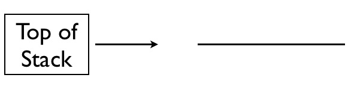

This document discusses the calling convention which we will be using in CS64, which defines the protocol used for calling functions and returning from functions. Many different such calling conventions exist, and this document merely describes one of them. For those interested, this document's calling convention is based off of the calling convention here.
Relative to other calling conventions, the calling convention in this document is simplified. Specifically, this calling convention:
$fp and $gp registers, which other conventions use to manage things like global variables and stack-allocated arraysstructs.
Such allocations can be handled without changing any of the rules described in this document, but they have intentionally been omitted to keep things simple and streamlined.
In addition, relative to some of the calling conventions out there, this one is somewhat optimized, particularly when it comes to memory usage. This is intentionally done to reduce boilerplate code that always needs to be written, and to help keep code focused on the task at hand as opposed to bookkeeping activities. This calling convention is optimized in the following ways:
The rest of this document describes why we need a calling convention, and how the particular calling comvention used in this class works. In all cases, when you are asked to implement something that obeys the MIPS calling convention, this means implementing something in accordance to the rules specified in this document. In general, solutions that violate the rules specified in this document will receive no credit. The reason why this is so severe is because solutions which violate the calling convention tend to be completely untestable; if we call into your code as part of a test harness, and then your code violates the calling convention, it means that the state of the test harness has likely been overwritten, meaning it will no longer work correctly. While we have a way of detecting if this happened, we do not have a way to correct things once the damage has been done. It is for this reason that it is so important that your code behaves according to the calling convention specified in this document.
The goal of any calling convention is to have a way of implementing functions in assembly. This is more challenging than it may initially sound, as there is nothing inherently built into the processor that allows for function calls to be performed, at least in a way that is as straightforward as adding numbers together. For example, with MIPS, while we have a way to start executing some other piece of code (as we need for a function), we do not have an inherent way of jumping back to some other piece of code when execution has completed elsewhere. As another example, while we have a way to save variables somewhere with MIPS (i.e., with registers), we don't have an inherent way to save an arbitrary number of variables. Without this capability, we can have neither arbitrarily nested function calls, nor can we have recursion.
While MIPS does not have built-in capabilities which handle functions, it does provide enough functionality to implement functions ourselves.
For example, MIPS allows for memory access, which, when used with care, can be used to implement a call stack.
Additionally, with some care, we can explicitly have code jump back to a caller, effectively implementing a return in the process.
As such, we are not stuck in the water when in comes to functions; it's just that we need to put more effort into their implementation, as functions exist at a higher level of abstraction than what is provided by the MIPS hardware.
This also means that there are many possible ways to implement functions, each with its own set of advantages and disadvantages.
For correctness, it is important that all functions are implemented in the same way, as function calls require specific interactions between different pieces of code.
For reasons which will soon become clear, registers are very special in the calling convention.
This is ultimately why the different registers have the names they do (e.g., $t0 versus $s0).
As such, for starters, restrict your knowledge of registers to only $zero; we will introduce the other registers, along with their intended usage, piecewise.
This section introduces register $ra.
There are two instructions which are key to performing function calls:
jal: A specialized jump instruction.
Jumps to a particular label, much like j does.
What is special about jal is that it will also put the address of the next instruction into register $ra.
jr: Another specialized jump instruction.
This will jump to the address contained in the specified register.
The above two instructions work in tandem with each other. For example, consider the following function:
void emptyFunction() {}
In order to call emptyFunction, this would be done like so:
jal emptyFunction
The above code snippet will jump to the code contained after the emptyFunction label (which we have yet to show), and put the address of the next instruction into register $ra.
The actual definition of emptyFunction is below:
emptyFunction: jr $ra
Since emptyFunction does not do anything, it simply immediately returns using the jr instruction.
Recall that jal put the address of the next instruction to execute after the function returns into register $ra (short for “return address”).
As such, jr $ra ends up jumping to the address of the instruction immediately after the call.
This effectively achieves the transfer of control flow between a call and return - we jump to the definition of the function on a call, and we return to the point immediately after the function call using the address that was specified when the call was made.
This section introduces registers $a0 - $a3.
To make our definition of emptyFunction more useful, we will have it take arguments.
We change the definition to the one below:
void takesArguments(int x, int y) {
x = x + y;
}
While this definition does not actually do much of anything yet, it suffices as a minimal example to illustrate how a call is made.
Consider the following function call to takesArguments:
takesArguments(3, 4)
The above function call can be implemented like so:
li $a0, 3 li $a1, 4 jal takesArguments
That is, arguments are specified in registers $a0 through $a3.
The first argument is passed in $a0, the second argument in $a1, and so on.
The way values are passed is to actually set the corresponding register to the appropriate value.
In this case, because the first argument was a 3, we set register $a0 to the value 3 immediately before the call to takesArguments.
As for the definition of takesArguments, it will then look at $a0 and $a1 to get its parameter values.
With this in mind, takesArguments has the following definition below:
takesArguments: add $a0, $a0, $a1 jr $ra
The only difference from our previous emptyFunction definition here is the addition of the add instruction, which effectively computes x = x + y.
The variable x is passed in register $a0, as it is the first argument.
Similarly, the variable y is passed in register $a1, as it is the second argument.
Keep in mind that we only have registers $a0 - $a3 available to us, meaning functions can take at most four arguments (which would be passed in all four registers).
You should never need more than four arguments in this class.
There is a way to pass more via other mechanisms, though we won't be discussing them in this class.
This section introduces registers $v0 and $v1.
As it stands, takesArguments does not have much of a practical purpose, as it merely adds its parameters together.
What would be far more useful is to return something.
As such, we modify the definition of takesArguments to yield the definition of addTwo shown below:
int addTwo(int x, int y) {
return x + y;
}
For function returns, registers $v0 and $v1 are used.
The first value returned is placed in register $v0 (if applicable), and the second value returned is placed in register $v1 (if applicable).
With this in mind, we can implement addTwo in MIPS assembly, like so:
addTwo: add $v0, $a0, $a1 jr $ra
The returned value, that of adding addTwo's two parameters together, is put into register $v0.
Calling code then expects that $v0 will hold the returned value.
This is very much like issuing the system call to SPIM for reading an integer from a user (syscall 5), where the integer read in is placed in register $v0.
This section introduces $t0 - $t9.
So far, the functions we have implemented have been relatively simple. Let's make things a bit more complex, by introducing the need for temporary variables, like so:
int needsTemps(int x, int y) {
int add = x + y;
int sub = x - y;
int mult = add * sub;
return mult;
}
The function needsTemps above uses the temporary variables add, sub, and mult.
Previously in this sort of situation, you simply would use some arbitrary registers to use here.
However, for the purposes of following the MIPS calling convention, for reasons we'll get into shortly, we are a bit restricted with what we can use.
In this case, we can use registers $t0 - $t9.
For translating the above code, we'll use the following temporary variable to register mapping.
Other than the fact that we restrict ourselves to registers $t0 - $t9, this mapping is arbitrary; we can use any of the variables in the range $t0 - $t9.
| Original Variable | Mapped to Register |
|---|---|
add |
$t0 |
sub |
$t1 |
mult |
$t2 |
With the above mapping in hand, we can translate needsTemps into the following MIPS assembly code:
needsTemps: add $t0, $a0, $a1 sub $t1, $a0, $a1 mult $t0, $t1 mflo $t2 move $v0, $t2 jr $ra
The above MIPS code is a straightforward translation of the C code, which follows the C code exactly.
The only portion introduced from the previous example is that now we can use registers $t0 - $t9 if we need additional registers.
This section introduces register $sp.
Here we introduce the portion of the MIPS calling convention which is arguably the most crucial, but also the most difficult to understand: functions which call functions. To illustrate why things suddenly become more complex here, consider the following C code:
void third() {}
void second() {
third();
}
void first() {
second();
exit();
}
Using the components you've seen so far, you may be tempted to implement first and second using the following MIPS assembly code:
third: jr $ra second: jal third jr $ra first: jal second # perform the exit syscall from SPIM li $v0, 10 syscall
The above code, however, does not work correctly.
To understand why, recall that $ra is intended to hold the address of the instruction to return back to.
When first calls second, the address of first's instruction after the call (specifically the li $v0, 10 instruction) is put into register $ra.
This becomes problematic when second calls third, because second then puts the next's instruction into $ra (specifically the jr $ra instruction in second).
This overwrite's $ra's value.
When third returns, this is not a problem, but now second no longer has the appropriate address to return to, as the appropriate address was overwritten when second called third.
Now, when second executes jr $ra, it's going to start executing instructions where $ra currently points, which just so happens to be the jr $ra instruction in second.
As such, this code will now forever jump to the same instruction over and over again - the jr $ra instruction in second.
A potential workaround is to put the address to return to in another register. To illustrate this idea, consider the code below, which shows changes from the previous code in bold. Note that this is just to illustrate the idea; you should never implement your code this way, as it violates the calling convention.
third: jr $ra second: move $t0, $ra jal third jr $t0 first: jal second # perform the exit syscall from SPIM li $v0, 10 syscall
The key change with the code above is that second copies the value of $ra into $t0 before the call to third, and then it returns to first by jumping to the address specified in $t0.
This ends up working around the original problem, because now $ra isn't being overwritten.
The problem with this workaround is that it does not scale up to larger programs.
For example, let's add another function call into the mix, which is named fourth below.
We will perform the same workaround as before.
(Again, do not implement your own code this way; this is strictly for illustration purposes only.)
fourth: jr $ra third: move $t1, $ra jal fourth jr $t1 second: move $t0, $ra jal third jr $t0 first: jal second # perform the exit syscall from SPIM li $v0, 10 syscall
With the above code, we now use registers $t0 and $t1 as a sort of spillover for register $ra, in second and third, respectively.
Crucially, we had to add in a second register into the mix, namely $t1.
An additional call (say, to fifth) would require an additional register (e.g., $t2) and so on.
Eventually, we'd completely run out of registers, as MIPS only has 32 registers in all.
Moreover, this strategy doesn't allow for recursive functions, which need to jump to the same function label over and over again.
The solution to the above problem, a solution implemented widely, is that of a stack in memory.
You have likely heard of a call stack before; this is ultimately where the call stack comes in.
The call stack is a sort of data structure in memory, which stores the return addresses of the various functions which have been called in the past.
When a function is called, the address that the function needs to return to is stored (or more specifically, pushed) onto the call stack.
When a function returns, the address is taken from (or more specifically, popped off of) the call stack.
Psuedocode illustrating this process with our previous example is shown below (note that push and pop are not real MIPS instructions; this is just for illustration purposes).
fourth: jr $ra third: push $ra jal fourth pop $ra jr $ra second: push $ra jal third pop $ra jr $ra first: jal second # perform the exit syscall from SPIM li $v0, 10 syscall
In the above psuedocode, the intended semantics of push $ra is to push the current value of $ra onto the call stack.
The intended semantics of pop $ra is to pop the topmost value of the call stack into register $ra.
To visually show how push and pop effectively work, the series of images below demonstrate this.
Initially, the stack is empty, like so:

When first is initially entered, it calls second.
second's first action is to push the value of $ra onto the stack, which dictates where second should return to.
With this push $ra instruction, the stack ends up looking like the following:
second then calls third, which subsequently pushes the value of $ra onto the stack with push $ra
Keep in mind that with second's jal third instruction, the value in the $ra register now holds where third should return to.
As such, after this second push $ra instruction, the call stack looks like the following:
third then calls fourth with the jal fourth instruction, jumping to the code at the label fourth.
As fourth doesn't need to call any other functions, fourth doesn't need to push anything onto the call stack.
Instead, fourth can directly return to third using the value third placed into register $ra with jal fourth.
This jump is achieved in fourth with jr $ra.
With this use of jr $ra in fourth, execution the proceeds to third, specifically at the instruction pop $ra.
The pop $ra instruction in third puts the value on top of the stack into register $ra, resulting in a stack that looks like the following:
The next instruction executed is third's jr $ra instruction, which uses the value freshly popped off of the call stack into register $ra.
With this, control is transferred back into second (that is, third returned into second), specifically into second's pop $ra instruction.
With this one instruction, the value on top of the call stack is placed into register $ra, resulting in a call stack that looks like the following:
The value in register $ra now holds the address of the instruction that second should return to, specifically first's li $v0, 10 instruction (well, whatever instructions the psuedoinstruction li $v0, 10 translate to).
second then executes its jr $ra instruction, transferring control back into first.
From there, the value 10 is loaded into register $v0, and ultimately the prorgram exits with SPIM's exit system call via the syscall instruction.
The previous example demonstrates how to use the call stack to store return addresses as execution proceeds through different functions.
While this example illustrates the high-level concepts, it does not actually explain how to implement it purely in MIPS assembly, as it relies on the push and pop instructions, which are not valid instructions or even psuedoinstructions.
MIPS instead offers an even lower-level interface to the call stack, handled via a new register: $sp.
What $sp holds is a pointer to the top of the stack; $sp is, in fact, short for “stack pointer”.
Instead of using our push instruction, which simultaneously allocated space on the stack and stored a value into the newly allocated space, we must instead explicitly move the stack pointer in one step and store the value of interest in another step.
Moving the stack pointer is easily accomplished via the addiu instruction.
To allocate space for $ra, a four byte (32 bit) value, we'll need to adjust the stack pointer (held in $sp), like so:
addiu $sp, $sp, -4
We use addiu as opposed to addi because there is no such thing as a negative memory address.
That is, all memory addresses are unsigned, so triggering a processor-level exception on overflow (as addi does) is nonsensical (as there is no such thing as overflow in an unsigned context).
As for why we decremented 4 as opposed to incrementing 4 is because on MIPS, the stack, by convention, grows from high addresses to low addresses.
That is, an empty stack would be represented by the stack pointer ($sp) holding a large value like 0xFFFFFFFF, and a full stack would be represented by the stack pointer holding a small value like 0x00000000.
The above instruction effectively allocates space on the stack.
The next step is to store the value of $ra into the newly allocated space.
This can be performed with the sw instruction, like so:
sw $ra, 0($sp)
The above instruction will copy the value of $ra into the memory address at $sp with offset 0, which corresponds to the space we just allocated.
To summarize, our psuedocode instruction:
push $ra
...is equivalent to:
addiu $sp, $sp, -4 sw $ra, 0($sp)
As for the pop psuedocode instruction, this is effectively a push in reverse.
Instead of allocating space and then storing something at the newly allocated space, we load the value at the top of the stack and deallocate the slot at the top of the stack.
The loading of the value off of the top of the stack can be performed with the lw instruction, shown below, which loads the value into register $ra:
lw $ra, 0($sp)
From here, we can deallocate the space at the top of the stack, which is performed by moving the stack pointer 4 bytes to a higher address (indicating a less deep stack).
This is shown below:
addiu $sp, $sp, 4
In summary, the pseudocode instruction:
pop $ra
...is equivalent to:
lw $ra, 0($sp) addiu $sp, $sp, 4
With the above pieces in place, we return to our original example, subbing in actual valid MIPS instructions as opposed to our push and pop pseudoinstructions:
fourth: jr $ra third: addiu $sp, $sp, -4 sw $ra, 0($sp) jal fourth lw $ra, 0($sp) addiu $sp, $sp, 4 jr $ra second: addiu $sp, $sp, -4 sw $ra, 0($sp) jal third lw $ra, 0($sp) addiu $sp, $sp, 4 jr $ra first: jal second # perform the exit syscall from SPIM li $v0, 10 syscall
This section introduces registers $s0 - $s7.
The example above shows how to manipulate the call stack in order to have arbitrarily deep chains of function calls working properly. However, it does not jive well when it comes to functions which need additional registers for processing. For example, consider the following C code:
int subTwo(int a, int b) {
int sub = a - b;
return sub;
}
int doSomething(int x, int y) {
int a = subTwo(x, y);
int b = subTwo(y, x);
return a + b;
}
The explanations above stated that additional registers were needed, then we could use registers $t0 - $t9.
However, this is problematic with the above code.
For example, within doSomething, we may want to map variables a and b to registers $t0 and $t1, respectively.
This mapping would mean that subTwo could not map variable sub to either register $t0 or $t1, as doing so would interfere with the values that doSomething puts into registers $t0 and $t1.
While we can get around this problem in this case by being sure to map sub to a different register (e.g., $t2), this is another hacky workaround (which, incidentally, you should never do in your code, as it violates the MIPS calling convention).
With enough function call nesting, we'll once again eventually run out of registers.
Once again, the call stack comes to the rescue here.
In addition to pushing the values of $ra onto the stack when we want to preserve them across calls, we can also push other values, as with variables a and b above.
This is shown in the MIPS code below, which implements subTwo and doSomething legally according to the MIPS calling convention:
subTwo:
# map sub to $t0
sub $t0, $a0, $a1
move $v0, $t0
jr $ra
doSomething:
# allocate space for $ra, x, and y, which all must live past
# the first call to subTwo
addiu $sp, $sp, -12
# save these values onto the stack.
# note that we use different offsets, which is because everything
# was allocated in a single large block
sw $ra, 8($sp)
sw $a0, 4($sp)
sw $a1, 0($sp)
# x and y are already in the right place for the first call to
# subTwo, so we can call it directly
jal subTwo
# load x and y into the right positions for the next call
# to subTwo. Note that we intentionally flip where we place
# these values, as the call is to subTwo(y, x)
lw $a0, 0($sp)
lw $a1, 4($sp)
# allocate space on the stack for a, which needs to survive
# past the second call to subTwo
addiu $sp, $sp, -4
# store a on the stack, which is held in $v0
# (where subTwo(x, y) returned)
sw $v0, 0($sp)
# make the second call to subTwo
jal subTwo
# the result of subTwo(y, x) (b) is in $v0.
# add this to the previously stored a, which we'll need to grab
# from the stack
lw $t0, 0($sp)
add $v0, $v0, $t0 # prep return value directly
# load in the value of $ra from the stack. Note that the offset
# is different from before, as we since allocated additional values
# on the stack
lw $ra, 12($sp)
# deallocate space on the stack, and return
addiu $sp, $sp, 16
jal $ra
The above code is valid, and it obeys the calling convention. In general, you should remember the following:
Values in unpreserved registers (every register introduced so far except for $sp), are not preserved across calls.
You must always assume that non-preserved registers will change values across calls, even if you know for a fact that they don't..
The above convention means that functions operate independently of each other when it comes to how registers are treated. Violations of the above rule in correct code necessarily mean that one function relies on another function not modifying a register, which leads to hacky code (functions should be able to change indepdently of each other).
While the above code works and obeys the MIPS calling convention, it is much more complex than it needs to be.
Nearly all of the instructions in doSomething are devoted to manipulating the call stack, which is not ideal.
Additionally, reasoning about which values are on the call stack at which times is not trivial.
For example, while the value of $ra is stored onto the stack initially at offset 8 of $sp, we later load the value of $ra from offset 12 of $sp, as a 4-byte allocation had taken place since that point.
It would be much nicer if we could reference individual variables in the code via registers, which are more permanent than offsets from the stack pointer ($sp).
It is here where registers $s0 - $s7 come in.
These registers are preserved, meaning that their values persist across calls.
This is in stark contrast to registers $t0 - $t9, whose values do not persist across calls.
The downside of registers $s0 - $s7 is that if you want to use one of them, it is up to you to save the register's current value and then later restore it.
This way, calling code never “sees” the value of an $s* register change.
In contrast, with registers $t0 - $t9 can be written to directly at all times with no ill consequence to the MIPS calling convention, as nothing is permitted to assume that the values in these registers persist across calls.
To illustrate how registers $s0 - $s7 are used, the previous example is rewritten to use them:
# note that subTwo's definition remains the # same, as subTwo does not call anything subTwo: # map sub to $t0 sub $t0, $a0, $a1 move $v0, $t0 jr $ra doSomething: # map x to $s0 # map y to $s1 # map a to $s2 # optimization: because b doesn't need to live beyond # a call, we do not map it to an $s* register # allocate space for the $s* registers we will use, # along with $ra addiu $sp, $sp, -16 # save the register's values sw $s0, 0($sp) sw $s1, 4($sp) sw $s2, 8($sp) sw $ra, 12($sp) # initialize $s0 and $s1 with x and y, respectively move $s0, $a0 move $s1, $a1 # call subTwo with x and y, which are already in place jal subTwo # move the result to $s2 move $s2, $v0 # call subTwo with y and x move $a0, $s1 move $a1, $s0 jal subTwo # compute final result add $v0, $v0, $s2 # restore registers, deallocate, and return lw $ra, 12($sp) lw $s2, 8($sp) lw $s1, 4($sp) lw $s0, 0($sp) addiu $sp, $sp, 16 jal $ra
The above code now utilizes registers $s0 - $s7 in order to have values effectively survive past the calls to subTwo.
This has the following advantages over the prior implementation, among others:
$ra is stored at offset 12, and subsequently loaded from offset 12.
It is generally much more easy to reason about code which manipulates the stack from uniform offsets.
$s* registers.
In this simple example this doesn't mean much, though if we had many calls to subTwo then we'd end up performing much, much more stack manipulation.
The use of $s* registers here leads to better performance, because we only manipulate the stack when we absolutely have to.
In previous sections, the mapping of variables to registers was given. This section outlines a strategy for mapping variables to different registers.
If a variable's value does not need to live beyond a function call, then it can be safely mapped to registers $t0 - $t9.
While there is no restriction on which registers you map to here, it is generally preferable to map variables to registers in the order that they appear in the program.
For example, with the program:
void foo() {
int x = 2 + 2;
int y = 7 * 8;
}
...perhaps the most straightforward mapping is to map x to $t0 and y to $t1.
If a variable's value does need to live beyond a call, then generally it should be placed in one of the $s* registers.
Again, it is generally better to map variables to registers in the order in which they appear in the original program.
This section summarizes the different invariants you must preserve in the MIPS calling convention. This is redundant with the previous section, but more explicit with respect to exactly what you have to do. Violation of any of these invariants constitutes a violation of the MIPS calling convention, and can easily lead to a 0 on an assignment, as it makes code effectively untestable. In an exam setting, breaking the calling convention in a setting where code must follow the calling convention once is an automatic 50% point reduction; breaking it multiple times in the same setting will further reduce the number of points awarded.
Without further ado, the invariants you must preserve are listed below:
$s0 - $s7, and $sp) immediately before a function call must be the same immediately after the function returns.
While a call is occurring, the values in preserved registers are allowed to change, but the values must return to their original values after a call is performed.
$t0 - $t9, $a0 - $a3, and $v0 - $v1) must always be assumed to change after a function call is performed.
That is, after a function call is made, the programmer must assume that the values in unpreserved registers all changed in a completely unpredictable way.